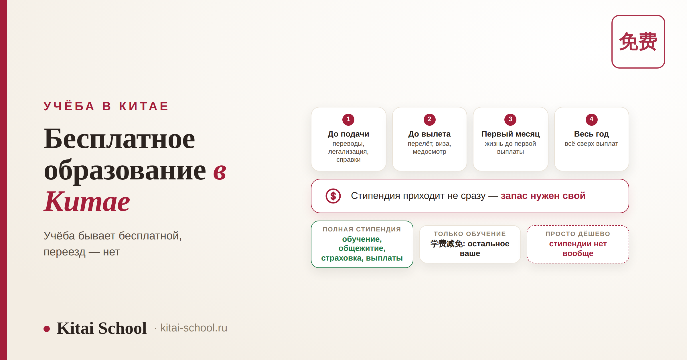
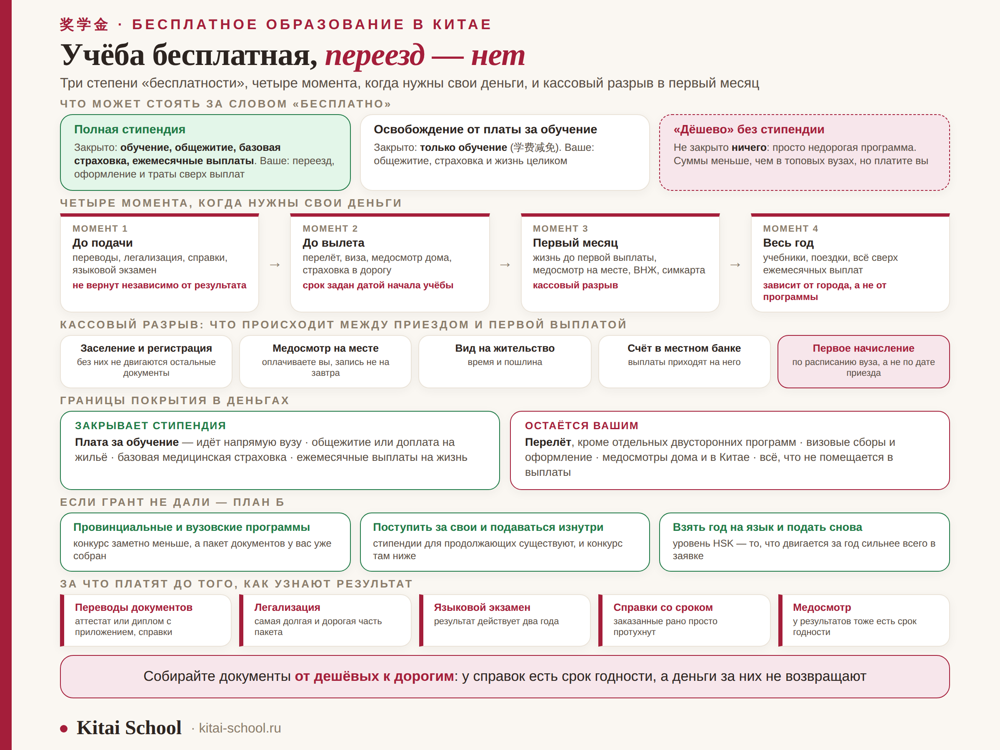

Учёба в Китае
Бесплатное образование в Китае: сколько своих денег всё равно понадобится


Про бесплатное обучение в Китае в блоге уже есть подробные разборы: какие бывают стипендии, как подаваться на правительственную программу и что писать в документах. Эта статья про другое и написана потому, что именно здесь чаще всего рушатся планы: сколько своих денег понадобится и в какие моменты. Потому что учёба действительно бывает бесплатной, а переезд — нет, и обнаруживается это обычно в самое неподходящее время: за месяц до вылета или в первую неделю в общежитии.
«Бесплатно» бывает трёх разных степеней, и в объявлениях их называют одним словом. Свои деньги нужны в четыре момента: до подачи, до вылета, в первый месяц и понемногу весь год. Самая частая неожиданность — кассовый разрыв: выплаты приходят не в день приезда. И отдельная строка расходов — попытка: переводы, легализация и справки оплачиваются до того, как вы узнаете результат, и не возвращаются.
Три степени «бесплатности» и почему их путают
Первое, что стоит выяснить в любом объявлении, — что именно там называют бесплатным. Вариантов три, и разница между ними в деньгах огромная.
| Что предлагают | Что закрыто | Что остаётся вам |
|---|---|---|
| Полная стипендия | обучение, место в общежитии, базовая страховка, ежемесячные выплаты | переезд, оформление и траты сверх выплат |
| Освобождение от платы за обучение | только обучение | общежитие, страховка, жизнь — целиком |
| «Дёшево» без стипендии | ничего: просто недорогая программа | всё, но суммы меньше, чем в топовых вузах |
Первую и вторую строку в объявлениях нередко называют одинаково. Проверять нужно по четырём пунктам: обучение, проживание, страховка, ежемесячные выплаты — и по каждому смотреть, стоит ли он в условиях программы. Полный разбор того, какие вообще бывают стипендии и кто их даёт, собран в статье про стипендии в Китае; здесь мы говорим только про деньги.
Четыре момента, когда нужны свои деньги
Полезнее считать не одну общую сумму, а четыре отдельные — они нужны в разное время, и путать их не стоит.
| Момент | На что | Особенность |
|---|---|---|
| 1. До подачи | переводы, легализация, справки, языковой экзамен | не возвращается независимо от результата |
| 2. До вылета | перелёт, виза, медосмотр дома, страховка на дорогу | расходы фиксированы датой начала учёбы |
| 3. Первый месяц | жизнь до первой выплаты, медосмотр на месте, вид на жительство, симкарта, банковская карта | кассовый разрыв: выплаты приходят не сразу |
| 4. Весь год | учебники, поездки, всё сверх ежемесячных выплат | зависит от города, а не от программы |
Конкретных сумм здесь нет намеренно: они зависят от города вылета, курса, программы и количества документов, а любые цифры из интернета устаревают за сезон. Что реально помогает — считать по этим четырём строкам отдельно и уточнять каждую у своего вуза и в консульстве. Сколько уходит на жизнь в разных городах, разобрано в статье дорого ли в Китае.
Расходы до подачи: их не вернут
Самая недооценённая часть бюджета. Всё, что делается до отправки заявки, оплачивается независимо от того, дадут вам стипендию или нет.
| Статья | Что учесть |
|---|---|
| Переводы документов | объём зависит от программы: аттестат или диплом с приложением, справки, иногда рекомендации |
| Легализация | самая долгая и самая дорогая часть пакета; порядок уточняйте под конкретную страну и вуз |
| Языковой экзамен | оплачивается при регистрации; результат действителен два года, поэтому сдавать заранее «про запас» невыгодно вдвойне |
| Справки с ограниченным сроком | заказанные слишком рано, просто протухнут, и платить придётся снова |
| Медосмотр | у результатов тоже есть срок годности |
Отсюда простое правило порядка: сначала дешёвое и бессрочное, потом дорогое и срочное. Сначала собрать то, что не портится и стоит недорого, а легализацию, справки и медосмотр запускать, когда календарь подачи уже понятен. Календарь по программам разобран в статье про поступление в Китай на бюджет.

Из личного опыта
Один наш студент выиграл полную стипендию и прилетел почти без денег — вполне логично рассуждая, что всё оплачено. Оплачено и было: общежитие ждало, обучение закрыто. А дальше выяснилось, что до первой выплаты нужно пройти медосмотр, подать документы на вид на жительство и открыть счёт в местном банке, и всё это — за свой счёт и не за один день.
Первые недели он занимал у соседей по этажу. Ничего страшного не случилось, все живы, но настроение первого месяца в чужой стране было испорчено ровно на пустом месте.
С тех пор я говорю всем стипендиатам одно и то же: привезите запас на первый месяц, даже если по бумагам вам ничего не нужно платить. Это не про недоверие к программе, а про то, что деньги идут по своему графику, а жить надо с первого дня.
Кассовый разрыв: почему первые недели живёшь на свои
Пункт, из-за которого чаще всего занимают деньги у новых знакомых. Логика простая: стипендия начисляется студенту, а студентом вы становитесь не в момент приземления.
| Шаг | Почему он задерживает деньги |
|---|---|
| Заселение и регистрация | без них не двигаются остальные документы |
| Медосмотр на месте | обязателен и оплачивается вами; запись бывает не на завтра |
| Оформление вида на жительство | занимает время и требует пошлины |
| Открытие счёта в местном банке | выплаты приходят на него, а не на карту из дома |
| Первое начисление | идёт по расписанию вуза, а не по дате вашего приезда |
Практический вывод один и он простой: запас на первый месяц привозят с собой. И заранее выясняют у вуза, каким числом обычно приходит первая выплата и какой банк открывают студентам, — это два вопроса, которые снимают почти всю неопределённость.
Что покрывает стипендия: коротко, чтобы не повторяться
Полный состав покрытия, разница между 奖学金, 助学金 и 学费减免 и правила ежегодной переаттестации подробно разобраны в статье про стипендии в Китае для иностранцев. Здесь только то, что важно для расчёта денег.
| Закрывает стипендия | Остаётся вашим |
|---|---|
| Плата за обучение — идёт напрямую вузу | Перелёт, кроме отдельных двусторонних программ |
| Общежитие или доплата на жильё | Визовые сборы и оформление документов |
| Базовая медицинская страховка | Медосмотры дома и в Китае |
| Ежемесячные выплаты на жизнь | Всё, что не помещается в эти выплаты |
И отдельная вещь, о которой узнают поздно: стипендию можно потерять. Практически везде есть ежегодная переаттестация, и по её итогам финансирование продлевают, продлевают с предупреждением или снимают. Это тоже финансовый риск, и он разобран в той же статье про стипендии.
Во что обходится попытка и что делать, если не дали
Отказ по правительственной программе — не редкость, а обычный сценарий: заявок много, мест мало. План Б стоит держать с самого начала, а не придумывать в мае.
| Вариант | Что это значит |
|---|---|
| Провинциальные и вузовские программы | конкурс заметно меньше, условия часто вполне приличные; пакет документов у вас уже собран |
| Поступить за свои и подаваться изнутри | стипендии для продолжающих существуют, и конкурс там ниже |
| Взять год на язык и подать снова | уровень HSK — то, что двигается за год сильнее всего остального в заявке |
| Считать, что всё пропало | документы уже собраны и часть из них ещё действует — это не ноль, а задел |
Как усилить заявку и как вообще распределяются места, разобрано в статье про гранты на обучение в Китае.
Куда идти дальше: разбор вашей программы
Эта статья — про деньги. Всё остальное про поступление у нас разложено по отдельным разборам.
| Что вам нужно | Куда идти |
|---|---|
| Какие вообще бывают стипендии и кто их даёт | Стипендии в Китае для иностранцев |
| Правительственная программа по шагам: каналы, документы, интервью | Стипендия CSC: полный гайд |
| Пять путей к оплаченному месту и календарь подачи | Как поступить в Китай на бюджет |
| Как распределяются места и что усиливает заявку | Гранты на обучение в Китае |
| Иду на первое высшее | Бакалавриат в Китае |
| Иду в магистратуру | Магистратура в Китае |
| У меня диплом колледжа | Поступление в Китай после колледжа |
Частые вопросы (FAQ)
Можно ли учиться в Китае действительно бесплатно?
Учиться — да: плату за обучение и место в общежитии закрывает стипендия, а на полных программах приходят ещё и ежемесячные выплаты. Но «бесплатно» относится к учёбе, а не к переезду: перелёт, визовый сбор, медосмотр дома и в Китае, легализация и переводы документов, оформление вида на жительство и первые недели до первой выплаты остаются на вас. Своих денег понадобится ощутимо меньше, чем при платном обучении, но не ноль.
Сколько своих денег нужно на старте?
Конкретную сумму назвать честно нельзя: она зависит от города вылета, программы, курса валют и того, сколько документов придётся переводить и легализовать. Полезнее держать в голове структуру и сроки: расходы до подачи, расходы до вылета, запас на первый месяц и текущие траты сверх стипендии. Считать бюджет стоит именно по этим четырём моментам, а не одной цифрой.
Что такое кассовый разрыв в первый месяц?
Ежемесячные выплаты начинают приходить не в день приезда: сначала нужно доехать, заселиться, пройти медосмотр, открыть счёт в местном банке и оформить документы, и только потом начисления доходят до вас. Между приездом и первой выплатой проходит время, и всё это время вы живёте на свои. Это самая частая финансовая неожиданность у стипендиатов, и закладывать запас на этот период нужно заранее.
Бывает ли обучение бесплатным без стипендии?
Бывает частично. Кроме полных стипендий существуют программы, которые освобождают только от платы за обучение: общежитие, страховка и жизнь тогда полностью ваши. В объявлениях и то и другое нередко называют одним словом «бесплатно», поэтому в условиях программы всегда смотрите, что именно покрывается: обучение, проживание, страховка и есть ли ежемесячные выплаты.
Что делать, если грант не дали?
Считать это нормальным сценарием и держать план Б заранее. Отказ по правительственной программе не закрывает провинциальные и вузовские: конкурс там заметно меньше, а условия часто вполне приличные. Второй путь — поступить за свои на недорогую программу и подаваться на стипендию для продолжающих уже изнутри вуза. Третий — подтянуть язык за год и подать снова более сильную заявку.
На что уходят деньги ещё до результата?
На то, что делается до подачи и не возвращается независимо от исхода: переводы и легализация документов, справки с ограниченным сроком годности, медосмотр, сдача языкового экзамена, иногда нотариальные копии. Отсюда практический вывод: собирать документы разумно в порядке от дешёвых к дорогим и не заказывать заранее то, у чего есть срок годности.
Язык — то, что двигается медленнее всего и решает в заявке больше всего. Приходите на бесплатный урок: посмотрим ваш реальный уровень, прикинем, до какого HSK можно дотянуть к подаче, и соберём план подготовки под сроки вашей программы.
Или напишите слово БЕСПЛАТНО нашему менеджеру в Telegram — разберём вашу ситуацию.
Дальше по теме: какие бывают стипендии — разбор системы; правительственная программа — стипендия CSC; пути и календарь — поступление на бюджет; цены на жизнь — дорого ли в Китае; и устройство ступени — бакалавриат в Китае.
Источники
- Условия стипендиальных программ для иностранных студентов — состав покрытия и порядок выплат; актуальные версии смотрите на сайтах программ и вузов.
- Требования к документам и легализации — уточняются в консульстве и в приёмной комиссии конкретного вуза.
- Практика Kitai School — сопровождение студентов при поступлении в китайские вузы.
Удачи с подачей! 加油！